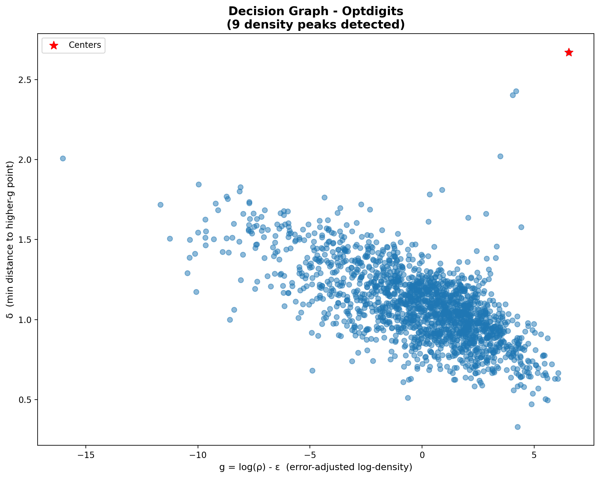
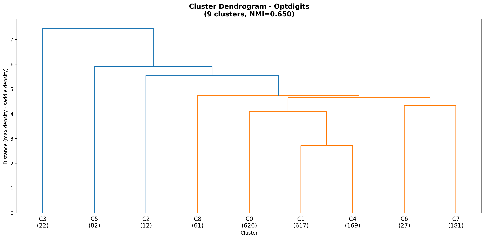

Outline
- Motivation & Problem
- Understanding the Method
- TWO-NN (Intrinsic Dimension)
- PAk (Adaptive Density Estimation)
- Heuristics 1-3
- Hyperparameters & Limitations
- Comparison with Other Methods
- Results & Demo
The Problem
Standard Density Peaks (DP) Limitations
DP (Rodriguez & Laio, 2014):
- Manual center selection
- Fixed k-NN density
- No error quantification
- Manual cluster merging
DPA (2021) solves all:
- Automatic center detection
- Adaptive PAk density
- Fisher Information bounds
- Statistical merging (Z-score)
DPA Algorithm Overview
- Estimate intrinsic dimension d using TWO-NN
- Compute adaptive density ρ using PAk
- Find cluster centers (Heuristic 1)
- Find saddle points (Heuristic 2)
- Merge insignificant peaks (Heuristic 3)
- Assign points following density gradient
Key advantage: Only ONE parameter (Z)!
Understanding the Method
1. TWO-NN: Intrinsic Dimension
Estimates the intrinsic dimension d of the data manifold.
Idea: For uniform density, the ratio μ = r₂/r₁ follows:
P(μ) = d · μd-1
where r₁, r₂ are distances to 1st and 2nd nearest neighbors.
Why it matters:
- Optdigits: 64 features → d ≈ 8-9
- MNIST: 784 features → d ≈ 12-14
Understanding the Method
2. PAk: Adaptive Density Estimation
Finds optimal k for each point using Likelihood Ratio Test.
Test statistic:
Dk = 2[Lk+1(ρ̂k+1) - Lk+1(ρ̂k)]
Stop when Dk > threshold (density no longer constant)
Error from Fisher Information:
ε = √(4(k̂+2) / ((k̂-1)·k̂))
Understanding the Method
3. The Three Heuristics
| Heuristic | Purpose | Criterion |
|---|---|---|
| H1 | Find cluster centers | δᵢ > rk̂ᵢ AND not in higher-g neighborhood |
| H2 | Find saddle points | Highest g among border points |
| H3 | Merge peaks | Z-test on peak height vs saddle |
g = log(ρ) - ε (error-adjusted density)
Hyperparameters
The Z Parameter
Merge criterion (Heuristic 3):
log(ρpeak) - log(ρsaddle) < Z · √(ε²peak + ε²saddle)
| Z | Confidence | Effect |
|---|---|---|
| 1.0 | 68% | More clusters (liberal) |
| 2.0 | 95% | Balanced (default) |
| 3.0 | 99.7% | Fewer clusters (conservative) |
Hyperparameters
Z Sensitivity on Real Data
Optdigits (1797 samples, d=9, 10 true classes):
| Z | 1.0 | 1.5 | 2.0 | 2.5 | 3.0 |
|---|---|---|---|---|---|
| Clusters | 11 | 9 | 9 | 8 | 7 |
| NMI | 0.736 | 0.650 | 0.650 | 0.493 | 0.474 |
Pendigits (10992 samples, d=6, 10 true classes):
| Z | 1.0 | 1.5 | 2.0 | 2.5 | 3.0 |
|---|---|---|---|---|---|
| Clusters | 34 | 32 | 25 | 22 | 22 |
| NMI | 0.768 | 0.771 | 0.784 | 0.781 | 0.781 |
DPA finds more clusters than ground truth (sub-structure within digit classes)
Limitations
Weaknesses
- High dimensions (d > 15):
PAk estimation degrades - Computation:
O(N × kmax × log N) - Image data:
Needs Tangent Distance - Uniform density:
No natural peaks
Mitigations
- Use lower Z for high-D
- FAISS for fast k-NN
- Tangent Distance built-in
- Check decision graph
Method Comparison
| Criterion | DPA | DP | DBSCAN | Spectral | GMM |
|---|---|---|---|---|---|
| Auto k | Yes (Z-test) | No (manual) | Unreliable | No | BIC |
| Parameters | Z only | k, threshold | eps, min_pts | k | k, cov |
| Non-convex | Yes | Yes | Yes | Yes | No |
| Error bounds | Fisher Info | None | None | None | None |
| Topography | Yes | No | No | No | No |
Numerical Results
| Dataset | Metric | DPA | DP | DBSCAN | Spectral* | GMM* |
|---|---|---|---|---|---|---|
| Optdigits (1797, d=9) |
NMI | 0.736 | 0.805 | 0.591 | 0.789 | 0.397 |
| ARI | 0.505 | 0.685 | 0.248 | 0.674 | 0.190 | |
| k | 11 | 17 | 26 | 10 | 10 | |
| Pendigits (10992, d=6) |
NMI | 0.781 | 0.748 | 0.706 | 0.820 | 0.593 |
| ARI | 0.657 | 0.492 | 0.549 | 0.680 | 0.432 | |
| k | 20 | 54 | 56 | 10 | 10 | |
| MNIST 10k (10000, d=14) |
NMI | 0.664† | 0.463 | 0.231 | 0.641 | 0.315 |
| ARI | 0.438† | 0.228 | 0.042 | 0.461 | 0.114 | |
| k | 28† | 50 | 19 | 10 | 10 |
*Spectral/GMM receive true k=10 as input. DPA, DP, DBSCAN find k automatically.
†DPA+TD (with Tangent Distance). Paper on 60k: NMI=0.84
Results: Optdigits

Results: Pendigits

Results: MNIST

DPA Topography


Conclusions
- DPA automates what DP required manually
- Single parameter Z with clear statistical meaning
- Error quantification via Fisher Information
- Topographic analysis for cluster interpretation
- Works well on real high-D data (UCI datasets)
Thank You!
Questions?
Code: github.com/francescacraievich/Data-Topography-DPA